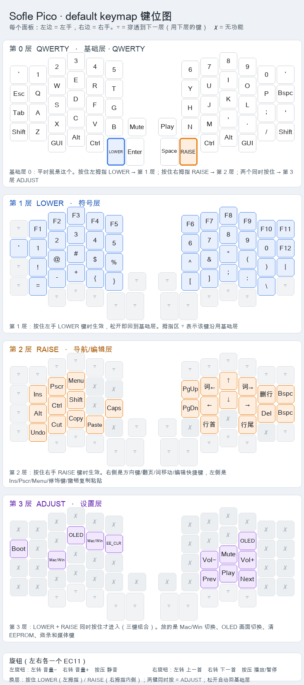
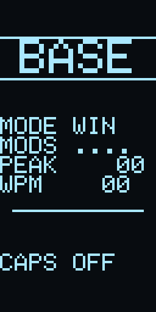
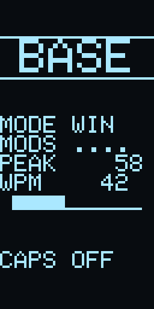
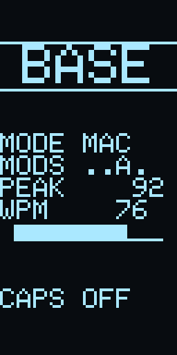
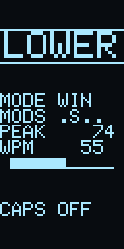
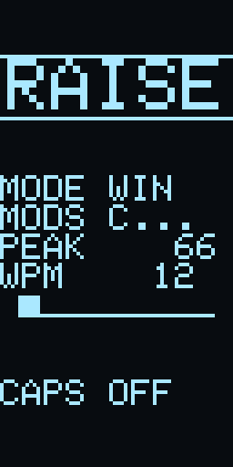
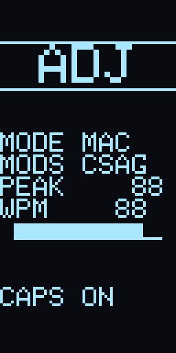
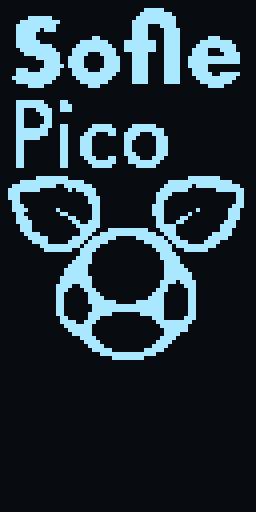

sofle_pico default 固件
键位图、OLED 显示内容预览、烧录说明。图片都是按固件里的绘图代码逐字节重放出来的，不是照片。
| 键盘 / keymap | sofle_pico / default（RP2040，分体，左右各一个 EC11） |
|---|---|
| 固件 | sofle_pico_default.uf2 · 152,064 字节 · 构建于 2026-09-30 01:12 |
| SHA-256 | 1439ad2687c25f50ca7764572b4d2f9e23e276ea5b0272fb538d8d52564b7db9 |
| QMK | tag 0.34.4 · commit 08c662f286（2026-09-05） |
| 编译命令 | qmk compile -kb sofle_pico -km default |
| 层 | QWERTY(0) / LOWER(1) / RAISE(2) / ADJUST(3)，LOWER+RAISE 三键组合出 ADJUST |
| 旋钮 | 左：音量 ± / 按压静音 右：上一首·下一首 / 按压播放暂停 |
| ADJUST 层 | OLED（左右各一个，切换本侧画面）· EE_CLR（清 EEPROM）· Mac/Win · Boot · 媒体键 |
键位图（四层）

点图看原图；文字版说明见 keymap.md
OLED 画面
每一半都能用自己那侧的 OLED 键在三种画面之间循环：status → anim → logo。
默认左边 status、右边 anim；选择只存 RAM，重启回到默认。开机时两半都会先播 ~1.8 秒动画。
① status 状态屏（默认：左手）
层名大字 / Mac-Win / 实时修饰键（C S A G，未按住显示 .）/ 本轮打字峰值 WPM / 当前 WPM 与进度条 / Caps Lock。






② anim 动画（默认：右手）
大眼小怪物：弹跳 + 落地压扁 + 眨眼 + 摆手 + 眼珠转动，8 帧、8 fps。 打开 GIF 看动态效果。


③ logo 静态图


oled_image.h（64x96 静态图）
烧录
进 bootloader
按住 Pico 的 BOOT → 点一下 RST → 先松 RST 再松 BOOT，
会出现名为 RPI-RP2 的 U 盘。
把 sofle_pico_default.uf2 拖进去即可。或用命令：
qmk flash -kb sofle_pico -km default -bl uf2-split-left
qmk flash -kb sofle_pico -km default -bl uf2-split-right
两半都要烧同一份固件；手性靠 EEPROM（EE_HANDS）。
烧完先清一次 EEPROM
固件启用了 VIA，键位是从 EEPROM 读的，keymap.c 只在 EEPROM 首次初始化时写进去。
改了键位（删层、加 OLED 键）之后，必须清一次才会生效：
- 在
ADJUST层按一下EE_CLR（左手T键位置），或 - 用 VIA 的 Reset Keymap。
另外：两个旋钮若拧反了，把 encoder_map 里那一对键码对调即可。
相关文件
- README.md —— 构建信息、功能要点、验证记录、注意事项
- keymap.md —— 四层键位表、换层方式、旋钮、自定义键
- oled_preview/README.md —— OLED 三种画面、切换机制、换图方法
- sofle_pico_default.uf2 · .hex · .elf · .map
gen_index.py/gen_keymap_image.py/oled_preview/gen_oled_preview.py—— 本页图片的生成脚本